複数のガジェットを使用する
Using-Multiple-Gadgets
サマリー
特定の目的を達成するために複数のガジェットを組み合わせて使用できます。同じプロットの上でガジェットウィンドウが重ならないようにするには、複数区分グラフの異なるレイヤ毎に違うガジェットを使用できます。他のガジェットからの結果は最終的に最後のガジェットウィンドウに追加され、新しい出力の度に更新されます。このチュートリアルでは、クイックピーク、クイックフィット、交差の3種類のガジェットを使用して基線と曲線の傾きの交点を探す方法を示します。
必要なOriginのバージョン:Origin 2016 SR0以降
学習する項目
このチュートリアルでは、以下の項目について説明します。
- 複数のガジェットを同時に使用して同じデータを分析する
- ガジェットの分析結果を特定のグラフに出力し、更新する
- 基線と曲線の線形フィット結果の交点を探す方法
複数のガジェットウィンドウのためのレイアウトを作る
- 新しいワークブックを開き、Samples\Curve Fitting\Gaussian.datファイルをインポートします。
- 1つのグラフに複数のガジェットを重ねて使用することを避けるため、次のような複数レイヤグラフを作成し、同じデータを入力します。
- 2列目をクリックして選択した後にメニューから作図：複数パネル：4区分と操作を行い、4区分のグラフを作図します。
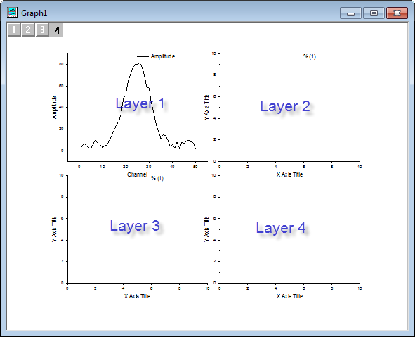
| Note: 上記画像はこれからの説明を分かりやすくする為に、どのパネルがどのレイヤか青い文字で示しました。
|
- ワークブックに戻り、Amplitude列を選択してマウスカーソルをその列の右端に位置づけ、カーソルの形状が
 に変わるようにします。カーソルの形状が変わったら、レイヤ2に向かい列Amplitudeをドラッグ＆ドロップで入力します。ダイアログが表示されたらOKをクリックしてダイアログを閉じます。同じ事をレイヤ3に対しても行ってください。レイヤ4の枠(右下の部分)については必要ないので、選択してからキーボードのDeleteキーを押して削除します。
に変わるようにします。カーソルの形状が変わったら、レイヤ2に向かい列Amplitudeをドラッグ＆ドロップで入力します。ダイアログが表示されたらOKをクリックしてダイアログを閉じます。同じ事をレイヤ3に対しても行ってください。レイヤ4の枠(右下の部分)については必要ないので、選択してからキーボードのDeleteキーを押して削除します。
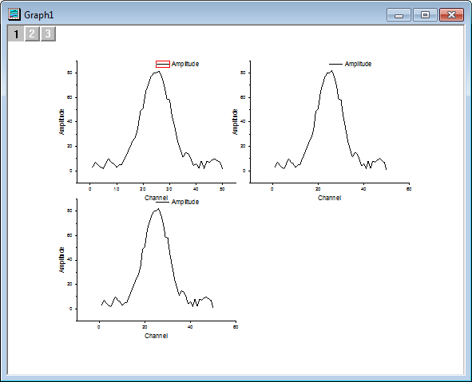
クイックピークガジェットを使って基線を検索する
- グラフをアクティブにしてから、Originメニューでガジェット：クイックピークを選び、Data Exploration:addtool_quickpeaksダイアログを開きます。折れ線グラフの曲線の基線の種類をスプライン接続に変更します。基線の線の種類を変更するには、基線タブを開き、接続法ドロップダウンリストでスプラインを選択します。これでアンカーポイントをスプライン法で接続します。
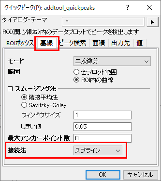
- 基線データの出力に関しては、素データが入っているワークシートに新しい列を追加せず、新しいワークブックに作成した基線データを出力し、更新があるたびにデータを置き換えるようにします。設定には、出力先タブを開きワークシートに追加のチェックを外して基線をワークシートに出力にチェックを付けます。チェックを付けると表示されるテキストボックスに下図のように入力して、ワークブック名QkPeakとワークシート名Baselineに設定します。
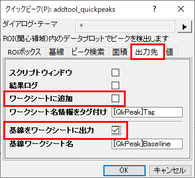
- OK をクリックして、ダイアログを閉じます。ROI領域(黄色の四角形)の境界に移動し、カーソルが両矢印に変わると、このROI領域のサイズを変更できます。
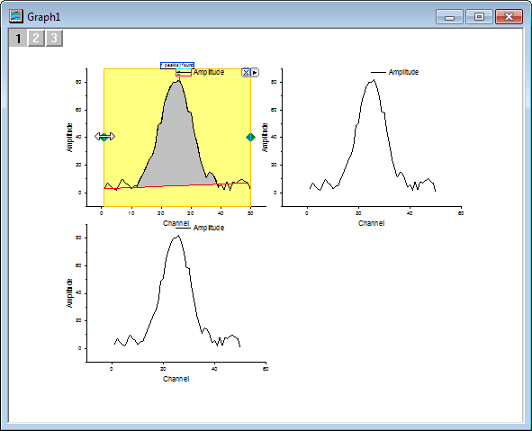
- ROIボックスの右上角にある三角形のボタンをクリックして、フライアウトメニューから新しい出力新しい出力を選択して基線のデータを出力します。
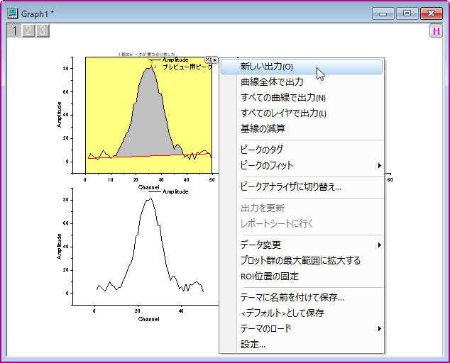
クイックフィットガジェットを使って曲線に線形フィットを実行
- グラフの左上にあるレイヤアイコンをクリックしてレイヤ2をアクティブにするか、右上のパネルをクリックして直接アクティブにします。
- Originのメニューからガジェット：クイックフィット：Linear(System) と選択してクイックフィットROIを開きます。ROI領域の大きさを調整して、ピークの左側が入るようにします。
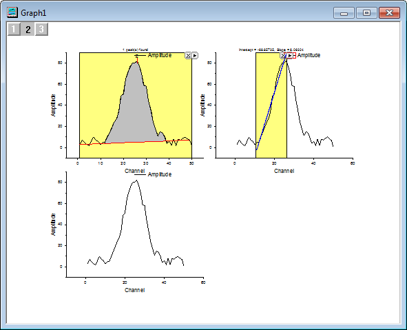
- ROIボックスの右上角にある三角形のボタンをクリックして、フライアウトメニューから設定を選択し、クイックフィット設定ダイアログを開きます。
- この線形フィットについては他の出力は必要ないのでラベルボックスタブを開き、グラフにラベルボックスを付加のチェックを外します。
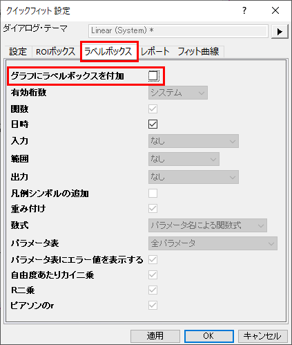
- 同じように、出力結果を出力しないようにするには、レポートタブを開き、出力先のドロップダウンからなしを選び、OKをクリックしてダイアログを閉じます。
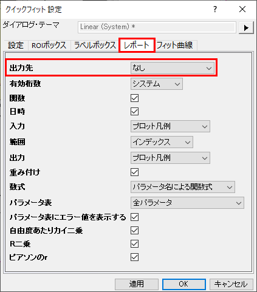
- ROI領域の右上にある三角ボタン に戻ります。クリックすると開くコンテキストメニューから新しい出力を選択してワークシートにフィット結果を出力します。
交差ガジェットを使って交点を探す
- 交差ガジェットを実行する前に、先の2つのガジェットから入手したフィットした基線と直線を3つ目のプロットに追加します。左上にあるレイヤアイコンをクリックし、レイヤ3をアクティブにします。レイヤアイコンの上で右クリックし、レイヤの内容を選択してレイヤ内容-レイヤ3ウィンドウを開きます。左側パネルでロングネームがQuickFit Y1 と基線 Y of Amplitudeとなっている行をそれぞれ選び、右矢印アイコンをクリックして右側パネルに追加します。
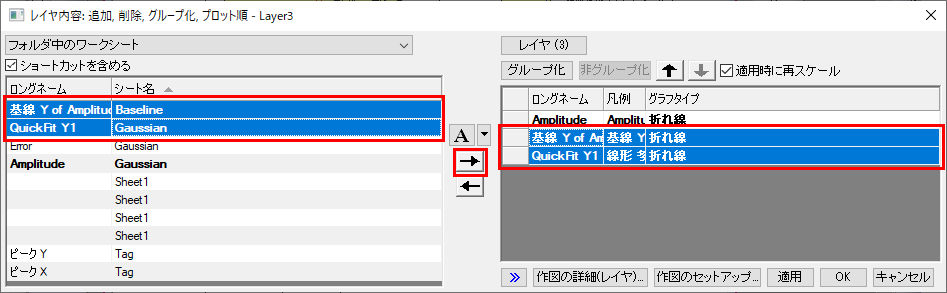
- OKをクリックしてウィンドウを閉じ、フィットした基線と折れ線が3つ目のレイヤに表示されます。
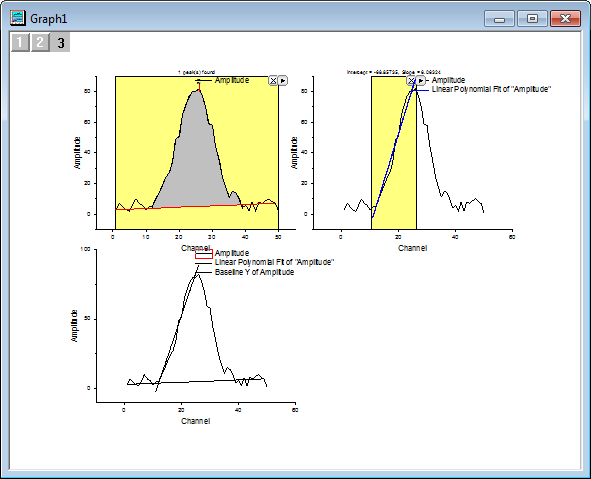
- グラフをアクティブにしてから、Originメニューでガジェット：交差を選び、交差:addtool_curve_intersectダイアログを開きます。そのままOKをクリックしてダイアログを閉じると交差ガジェットROIが表示されます。
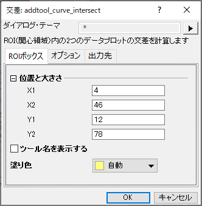
- ROI領域の位置と大きさを調整して基線と直線の交点が黄色いボックス内に入るようにしてください。元の曲線との交点を除外するには、ROI領域の右上にある三角ボタンをクリックし、データ変更の中にあるPlot(1) Amplitudeのチェックを外します。
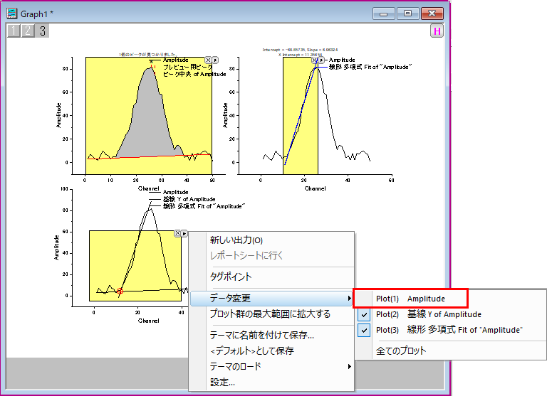
- ROI領域の右上にある三角ボタン に戻ります。クリックすると開くコンテキストメニューから新しい出力を選択して基線と線形フィットを行った直線の交点の結果を出力します。
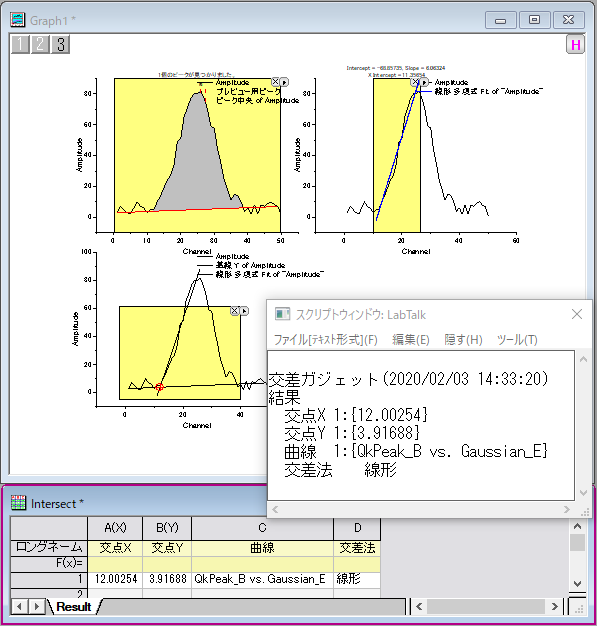
出力を更新する
- レイヤアイコンをクリックしてレイヤ1をアクティブにします。クイックピークROIを移動し、新しい基線を作成します。ROI領域の右上にある三角ボタン をクリックします。クリックすると開くコンテキストメニューから新しい出力を選択してワークシートに新しい基線を出力します。
- レイヤアイコンをクリックしてレイヤ2をアクティブにし、クイックフィットROIの位置を変えます。今度は曲線の反対側に設置しましょう。ROI領域の右上にある三角ボタン をクリックします。クリックすると開くコンテキストメニューから最後の出力を更新を選択してワークシートに線形フィット結果を出力します。
- レイヤアイコン をクリックしてレイヤ3をアクティブにします。交差ROIの位置を動かし、新しい基線と線形フィットをした直線の交点がボックスの中に入るようにします。ROI領域の右上にある三角ボタン をクリックします。クリックすると開くコンテキストメニューから新しい出力を選択して新しい交点の情報を出力します。
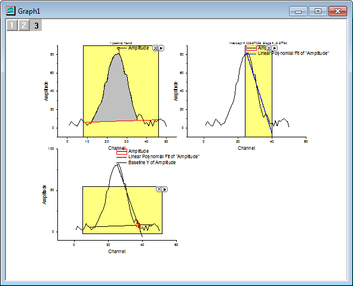